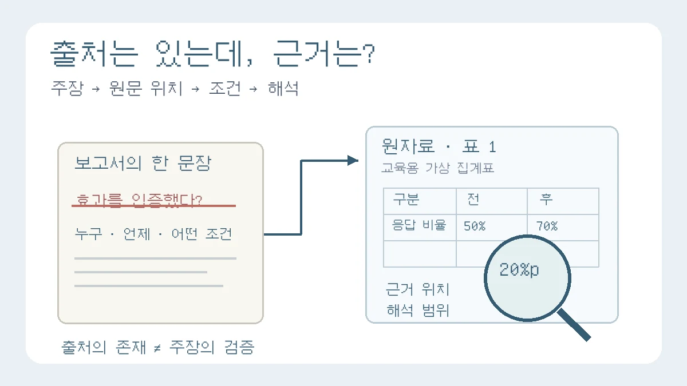

출처를 달았는데 왜 근거가 부족할까? 탐구보고서 인용·해석 점검법
참고문헌 개수보다 중요한 것은 내 문장과 원자료의 연결입니다

보고서 끝에 참고문헌은 여럿 적혀 있습니다. 문장마다 출처 표시도 달았습니다. 그런데 “이 자료의 어느 부분을 보고 그렇게 판단했나요?”라는 질문에는 답이 막힙니다. 이때 필요한 것은 참고문헌을 더 늘리는 일이 아니라, 내 주장과 실제로 읽은 근거를 다시 연결하는 작업입니다.
지난 작성 칼럼이 자료 요약을 자기 분석으로 바꾸는 세 질문을 다뤘다면, 이번에는 그 앞단을 점검합니다. 보고서에 쓴 한 문장이 원자료의 범위를 넘어서지 않는지 확인하는 방법입니다. 아래 네 단계와 근거 메모는 편집팀의 수정 도구이며 학교의 공통 채점표나 대학 평가 공식이 아닙니다. 인용 표기 형식은 담당 교사의 과제 안내를 먼저 따르세요.
출처의 존재와 주장을 뒷받침하는 힘은 다릅니다
기관 이름과 문서 제목이 실제로 존재하더라도, 내가 쓴 수치나 결론이 그 문서에 있다는 뜻은 아닙니다. 참고문헌 목록에는 자료가 들어 있지만, 정작 문장에는 다른 대상을 조사한 결과를 가져왔을 수도 있습니다. 정확한 출처 표기는 필요하지만 그것만으로 자료 선택과 해석의 검토가 끝나지는 않습니다.
Purdue OWL은 원문을 그대로 옮기는 직접 인용, 자신의 말로 바꾸는 바꿔쓰기, 핵심을 줄이는 요약을 구별하며 세 방식 모두 출처를 밝혀야 한다고 설명합니다.[1] 이를 보고서 수정에 적용하면 두 가지를 따로 살펴야 합니다. 남의 설명임을 밝혔는가, 그리고 그 설명으로 내가 지금 쓴 주장을 말할 수 있는가입니다.
문장 끝에 출처 하나를 붙였다고 그 문단의 모든 판단이 원자료의 결론이 되는 것도 아닙니다. ‘자료에서 확인한 사실’과 ‘그 사실을 바탕으로 내가 제안한 해석’의 경계를 표시해 보세요.
한 문장을 네 단계로 따라가 보세요
- 주장 고르기: ‘효과가 있다’, ‘증가했다’, ‘원인이다’처럼 결론을 담은 문장을 하나 고릅니다. 한 문장에 여러 주장이 섞였다면 나눕니다.
- 원문 위치 찾기: 실제 읽은 문서에서 해당 표·그림·문단을 찾습니다. PDF는 인쇄 쪽수와 표 번호, 웹 문서는 소제목과 문단 첫 구절처럼 다시 찾을 수 있는 위치를 메모합니다. 제목이나 검색 결과만 봤다면 본문을 읽은 것으로 표시하지 않습니다.
- 조건 맞추기: 조사 대상·시기·지역·변수의 정의·단위가 내 문장과 같은지 대조합니다. 표 아래의 주석과 제외 조건도 함께 읽습니다. 실험이라면 측정 조건, 문학이라면 인용한 대목의 앞뒤 맥락이 이 자리에 해당합니다.
- 표현 조절하기: 확인한 사실, 내 해석, 아직 확인하지 못한 것을 나누어 문장을 고칩니다. 원문이 함께 나타난 현상을 설명했을 뿐이라면 ‘원인으로 입증했다’는 표현을 보류합니다.
모든 자료를 똑같은 방식으로 평가하자는 뜻은 아닙니다. 실험 보고서는 측정값·절차가, 작품 분석은 작품의 구체적인 표현이 근거가 됩니다. 문헌 탐구에서도 1차 자료라는 이름만으로 정확성을 보장할 수는 없습니다. 지금 질문에 맞는 자료인지, 어떤 방법과 범위로 작성됐는지를 함께 확인하세요.
가상 사례: ‘만족도 40% 상승’이라는 문장을 고치기
다음 숫자와 집계표는 계산과 문장 수정을 설명하기 위한 교육용 가상 자료입니다. 실제 학교 조사나 공공 통계가 아닙니다. 도서관 안내문을 바꾸기 전과 후, 서로 다른 이용자 각 100명에게 물었고 만족 응답이 각각 50명·70명이었다고 가정합니다. 표본 추출 방식과 두 집단의 다른 특성은 확인되지 않았습니다.
- 가상 집계표 1 · 변경 전: 응답자 100명 중 만족 응답 50명, 비율 50%.
- 가상 집계표 1 · 변경 후: 응답자 100명 중 만족 응답 70명, 비율 70%.
- 두 비율의 차이: 70%−50%=20%포인트.
- 변경 전 비율을 기준으로 한 상대 증가율: (70−50)÷50×100=40%.
수정 전 가상 문장
안내문 개선으로 학생 만족도가 40% 상승했다. 따라서 이 방식의 효과가 입증되었다. (가상 집계표 1)
계산 자체가 맞아도 문장 전체가 맞는 것은 아닙니다. ‘40%’가 비율의 차이인지 상대 증가율인지 모호하고, 서로 다른 응답 집단을 전체 학생으로 넓혔습니다. 안내문 변경 외의 조건도 같다고 확인하지 않았는데 원인과 효과로 단정했습니다. 표의 숫자를 찾았다는 사실과 그 효과를 검증했다는 주장은 서로 다릅니다.
수정 후 가상 문장
가상 집계표 1에서 만족 응답 비율은 변경 전 50%, 변경 후 70%로, 두 비율의 차이는 20%포인트이다. 이는 변경 전 비율을 기준으로 40%의 상대 증가에 해당한다. 다만 두 조사는 서로 다른 응답자를 대상으로 했고 다른 조건의 차이도 확인하지 못해, 안내문 변경이 증가의 원인이라고 판단할 수는 없다.
실제 보고서에서는 지표 이름과 정의가 먼저입니다. 위 예시는 이분형 ‘만족 응답 비율’에 관한 것이므로, 평균 만족도 점수나 동일 학생의 전후 변화로 바꾸어 읽으면 안 됩니다. 자신이 조사하지 않았다면 ‘조사했다’ 대신 ‘자료를 비교했다’고 수행 범위도 맞춥니다.
따옴표를 빼고 바꿔 쓰면 내 생각이 될까요?
원문을 자기 말로 바꾸어도 남의 설명을 사용한 사실은 달라지지 않습니다. 바꿔쓰기와 요약에도 출처가 필요하다는 안내를 기억하세요.[1] 원문의 단어 몇 개만 바꿨는지, 조건이나 불확실성을 지워 더 강한 주장으로 만들지는 않았는지도 함께 봅니다.
다음 두 문장은 실제 논문을 인용한 것이 아니라 편집팀이 만든 연습용 문장입니다.
연습용 원문
이번 조사에 참여한 이용자에게서 두 지표가 함께 높게 나타났으나, 인과관계는 확인하지 않았다.잘못 바꾼 문장
이 연구는 해당 정책이 모든 학생의 이용률을 높인다는 사실을 증명했다.
두 문장은 같은 뜻이 아닙니다. 조사 참여자를 모든 학생으로, 지표의 동반 변화를 정책 효과로, 확인하지 않은 인과관계를 증명으로 바꾸었습니다. 출처를 붙여도 이 차이는 남습니다. 직접 인용을 할 때는 원문의 표현을 정확히 구분하고, 생략이나 번역 때문에 조건이 달라지지 않는지 확인합니다. 작품의 문장도 앞뒤 맥락을 빼면 해석이 바뀔 수 있으므로 위치만 적는 것으로 끝내지 않습니다.
원문을 못 찾거나 AI가 알려 준 출처라면
검색 결과에 논문 제목과 저자명이 보인다는 이유만으로 그 논문을 읽은 것처럼 쓰지 마세요. AI 답변에 적힌 참고문헌도 검색 후보에서 출발합니다. 발행기관·학술지·저자·연도와 원문에서 실제 확인한 내용을 대조하고, 접근하지 못한 본문을 읽었다고 표시하지 않습니다.
Purdue OWL의 APA 안내는 원자료를 직접 읽고 인용하도록 노력하되, 다른 자료에 실린 인용을 사용할 경우 실제로 읽은 2차 자료를 드러내는 방식을 설명합니다.[2] 이것이 모든 학교의 표기 형식을 하나로 정한다는 뜻은 아닙니다. 과제 형식을 따르면서 다음처럼 확인 상태를 구분해 보세요.
- 본문 확인: 필요한 본문이나 표를 직접 읽었고, 주장을 뒷받침하는 위치를 메모했습니다. 자료의 질과 적합성은 별도로 검토합니다.
- 부분·간접 확인: 초록만 읽었거나 보도자료·다른 책을 통해 접했습니다. 확인 범위와 실제 읽은 자료를 밝힙니다. 초록에 없는 표본 조건이나 효과 크기를 덧붙이지 않습니다.
- 미확인: 제목만 찾았거나 원문 내용이 주장과 맞는지 확인하지 못했습니다. 초안에 ‘추가 확인’ 표시를 두고, 끝내 확인하지 못하면 그 주장을 빼거나 확인 가능한 범위로 바꿉니다.
관련 기사 두 편이 같은 조사 하나를 전한다면, 독립적인 조사 두 건으로 세지 않습니다. 기관 페이지와 그 보도자료를 옮긴 기사도 어떤 원자료를 공유하는지 추적해 보세요. 새로운 자료가 더 필요하다면 같은 내용을 반복한 기사보다 다른 방법이나 조건의 자료를 찾는 편이 비교에 도움이 될 수 있습니다.
제출 전에는 ‘주장–근거 메모’ 한 장만 남겨 보세요
보고서 전체를 다시 쓰기보다 결론에 가까운 문장 하나를 먼저 고릅니다. 아래 항목을 실제 자료로 채우고 그 문장만 수정해 보세요. 예시의 숫자나 문장을 자신의 수행 결과처럼 가져오지 않습니다.
- 내 문장: 보고서에서 점검할 주장 그대로.
- 실제로 읽은 자료: 저자·기관, 제목, 발행 연도와 사용한 판본·버전.
- 근거 위치: 쪽·표·그림 번호 또는 소제목·문단 위치와 링크. 온라인 자료라면 확인 날짜도 남깁니다.
- 적용 조건: 누구·언제·무엇을 어떤 단위와 방법으로 확인했는가.
- 아직 모르는 것: 내 질문에 적용하기 전에 추가로 필요한 조건.
- 수정 문장: 확인한 사실과 내 해석을 나누고, 과한 표현을 걷어 낸 문장.
부모가 도울 때도 참고문헌을 대신 늘리거나 문장을 완성해 주기보다 “그 표에서 어느 칸을 봤어?”, “그 자료의 대상과 네 문장의 대상이 같아?”라고 물어보세요. 답이 막힌 부분은 확인할 지점이지 그럴듯한 이야기로 메울 빈칸이 아닙니다. 세특은 교사가 작성하므로 이 메모를 교사 기록용 완성 문장으로 꾸미지 말고 실제 학습과 수정의 자료로 사용합니다.
이 칼럼의 목표는 출처의 개수 경쟁이 아닙니다. 중요한 주장 하나를 원문까지 따라가고, 확인한 범위에 맞춰 고치는 일입니다. 전체 작성 흐름은 처음 쓰는 탐구보고서 대표 가이드, 자료 비교와 분석은 ‘내 생각’이 드러나는 세 질문, AI 활용 기록은 AI 수행평가에서의 검증·활용 기록 안내와 연결해 읽으세요. 학교별 도구 사용·인용 규칙은 담당 교사의 안내를 별도로 확인해야 합니다.
출처와 이 칼럼의 적용 범위
2026년 10월 30일 아래 대학 글쓰기 자료를 확인했습니다. 이 자료들은 인용·바꿔쓰기·간접 인용의 설명에 사용했으며 한국 고교의 공통 평가 규정으로 인용한 것이 아닙니다. 네 단계 점검, 주장–근거 메모, 집계표와 문장 수정 예시는 편집팀이 만든 교육용 제안입니다.
- [1] Purdue OWL — Quoting, Paraphrasing, and Summarizing: 직접 인용·바꿔쓰기·요약의 구분과 출처 표시.
- [2] Purdue OWL — In-Text Citations: Author/Authors: ‘Citing Indirect Sources’ 항목을 중심으로 실제 읽은 자료와 원자료의 구분 확인.
이 칼럼은 운영자의 관점과 일반 교육 정보를 담고 있으며 특정 대학 합격이나 평가 결과를 보장하지 않습니다.
함께 볼 글
탐구보고서 처음 쓰는 법: 질문·자료·분석·결론을 연결하는 실전 예시NEW
가상 공지 네 개를 비교하며 관찰과 해석, 결론의 한계를 구분하고 보고서 한 편으로 묶습니다.
영어 과목 탐구보고서에서 원문 자료 활용하는 법NEW
영어 보고서는 원문 자료를 번역하는 데서 끝나지 않고 핵심 표현과 주장 구조를 이해해야 합니다.
탐구보고서 자기점검 루브릭: 질문·방법·근거·한계로 고쳐 쓰기NEW
대학의 공식 평가표가 아닌 사이트 자체 자기점검 기준으로, 보고서의 빈칸을 찾고 수정 우선순위를 정합니다.